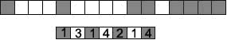
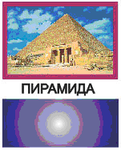
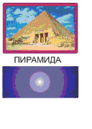
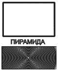

Форматы графичесских файлов.Преобразование форматов файлов
Форматы графических данных
Формат графического файла определяет вид информации, хранящейся в ней.
Форматы растровых графических файлов
TIFF (Tagged Image File Format). Формат предназначен для хранения растровых изображений высо¬кого качества (расширение имени файла .TIF).
PSD (PhotoShop Document). Собственный формат программы Adobe Photoshop (расширение имени файла .PSD), один из наиболее мощных по возможностям хранения растровой графической информации. Позволяет запоминать параметры слоев, каналов, степени прозрачности, множества масок.
JPEG (Joint Photographic Experts Group). Формат предна¬значен для хранения растровых изображений (расширение имени файла .JPG). Позволяет регулировать соотношение между степенью сжатия файла и качеством изображения.
GIF (Graphics Interchange Format). Стандартизирован в 1987 году как средство хранения сжатых изображений с фиксированным (256) количеством цветов (расширение имени файла .GIF). Получил популярность в Интернете благодаря высокой степени сжатия.
BMP – это формат графического редактора Paint. В нём не применяется сжатие. Он хорошо подходит для хранения очень маленьких изображений – таких как иконки на рабочем столе. Большие же файлы в этом формате занимают слишком много места.
PNG (Portable Network Graphics). Сравнительно новый (1995 год) формат хранения изображений для их публикации в Интернете (расширение имени файла .PNG). Поддерживаются три типа изображений – цветные с глубиной 8 или 24 бита и черно-белое с градацией 256 оттенков серого.
Форматы векторных графических файлов
WMF (Windows MetaFile). Формат хранения векторных изображений операционной системы Windows (расширение имени файла .WMF). По определению поддерживается всеми приложениями этой системы. Однако отсутствие средств для работы со стандартизированными цветовыми палитрами, принятыми в полиграфии, и другие недостатки ограничивают его применение.
EPS (Encapsulated PostScript). Формат описания как векторных, так и растровых изображений на языке PostScript фирмы Adobe, фактическом стандарте в области допечатных процессов и полиграфии (расширение имени файла .EPS). Так как язык PostScript является универсальным, в файле могут одновременно храниться векторная и растровая графика, шрифты, контуры обтравки (маски), параметры калибровки оборудования, цветовые профили. Для отображения на экране векторного содержимого используется формат
WMF, а растрового – TIFF. Но экранная копия лишь в общих чертах отображает реальное изображение, что является существенным недостатком EPS. Действительное изображение можно увидеть лишь на выходе выводного устройства, с помощью специальных программ просмотра или после преобразования файла в формат PDF в приложениях Acrobat Reader, Acrobat Exchange.
PDF (Portable Document Format). Формат описания документов, разра¬ботанный фирмой Adobe (расширение имени файла .PDF). Хотя этот формат в основном предназначен для хранения документа целиком, его впечатляющие возможности позволяют обеспечить эффективное представление изображений. Формат является аппаратно-независимьм, по¬этому вывод изображений допустим на любых устройствах – от экрана монитора до фотоэкспонирующего устройства. Мощный алгоритм сжатия со средствами управления итоговым разрешением изображения обеспечи¬вает компактность файлов при высоком качестве иллюстраций.
Методы сжатия графических данных
Иногда характеристики растрового изображения записывают в такой форме: 1024x768x24. Это означает, что ширина изображения равна 1024 пикселям, высота – 768 и глубина цвета равна 24. 1024x768 – рабочее разрешение для 15 – 17 дюймовых мониторов. Несложно догадаться, что размер несжатого изображения с такими параметрами будет равен 1024*768*24 = 18874368 байт. Это более 18 мегабайт – слишком много для одной картинки, особенно если требуется хранить несколько тысяч таких картинок – это не так уж много по компьютерным меркам. Вот почему компьютерную графику используют почти всегда в сжатом виде.
RLE (Run Length Encoding) – метод сжатия, заключающийся в поиске последовательностей одинаковых пикселей в сточках растрового изображения («красный, красный, ..., красный» записывается как «N красных»).

Рис. 1. Сжатие последовательности пикселей
Такой метод сжатия лучше всего работает с изображениями, которые содержат большие области однотонной закраски, но намного хуже с его помощью сжимаются фотографии, так как в них почти нет длинных строк из одинаковых пикселей.
LZW (назван так по первым буквам его разработчиков Lempel, Ziv, Welch ) основан на поиске повторяющихся узоров в изображении
JPEG обеспечивает высокий коэффициент сжатия для рисунков фотографического качества. При сжатии файлов формата JPEG (с потерей качества) изображение разбивается на участки 8x8 пикселей, и в каждом участке их значение усредняется. Усреднённое значение располагается в левом верхнем углу блока, остальное место занимается меньшими по яркости пикселями. Затем большинство пикселей обнуляются. При расшифровке нулевые пиксели получают одинаковый цвет.
Преобразование файлов из одного формата в другой
Необходимость преобразования графических файлов из одного формата в другой может возникнуть по разным причинам:
- программа, с которой работает пользователь, не воспринимает формат его
файла; - данные, которые надо передать другому пользователю, должны быть
представлены в специальном формате.
Преобразование файлов из растрового формата в векторный
Существуют два способа преобразования файлов из растрового формата в
векторный :
- преобразование растрового файла в растровый объект векторного изображения;
- трассировка растрового изображения для создания векторного объекта.
Первый способ используется в программе CorelDRAW, которая, как правило, успешно импортирует файлы различных растровых форматов. К примеру, если растровая картинка содержит 16 миллионов цветов, CorelDRAW покажет изображение, приближенное по качеству к телевизионному. Однако, импортируемый растровый объект может становиться довольно большим даже в том случае, если исходный файл невелик. В файлах растровых форматов информация хранится достаточно эффективно, так как часто используются методы сжатия. Векторные форматы такой способностью не обладают. Поэтому растровый объект, хранящийся в векторном файле, может значительно превосходить по размерам исходный растровый файл.
Особенность второго способа преобразования растрового изображения в векторное заключается в следующем. Программа трассировки растровых изображений (например,CorelTRACE) ищет группы пикселей с одинаковым цветом, а затем создает соответствующие им векторные объекты.
На рис. 2 показано растровое изображение, которое хорошо преобразуется в векторное. Дело в том, что растровые рисунки, имеющие четко выраженные границы между группами пикселей одинакового цвета, хорошо переводятся в векторные. В то же время результат трассировки растрового изображения фотографического качества со сложными цветовыми переходами выглядит хуже оригинала.

|  |
| Исходный растровый рисунок | Векторный рисунок |
 |
 |
| Исходный растровое изображение | Векторизованое изображение |
Преобразование файлов одного векторного формата в другой
Векторные форматы содержат описания линий, дуг, закрашенных полей, текста и т. д. В различных векторных форматах эти объекты описываются по-разному. Когда программа пытается преобразовать один векторный формат в другой, она действует подобно обычному переводчику, а именно:
- считывает описания объектов на одном векторном языке,
- пытается перевести их на язык нового формата.
При преобразовании рисунка 4а в формат CGM сохранились все исходные элементы (рис. 4б ). Формат DXF проигнорировал растровую картинку, исказил контур вокруг нее, коническую заливку, а также увеличил размер шрифта. Дело в том, что этот формат предназначен для конструкторских разработок и, следовательно, в нём отсутствуют команды для описания различных художественных эффектов.
|  |  |  |
| а) Исходное изображение в формате CDR |
б)Результат преобразования
в векторный формат CGM |
в)Результат преобразования
в векторный формат DXF |
Преобразование файлов из векторного формата в растровый
Преобразование изображений из векторного формата в растровый (этот процесс часто называют растрированием векторного изображения) встречается очень часто. Прежде, чем разместить рисованную (векторную) картинку на фотографии, её необходимо экспортировать в растровый формат.
Каждый раз, когда векторный рисунок направляется на устройство вывода (в частности, монитор или принтер), он подвергается растрированию — преобразованию в набор видеопикселей или точек.
При экспорте векторных файлов в растровый формат может быть потеряна информация, связанная с цветом исходного изображения. Это объясняется тем, что в ряде растровых форматов количество цветов ограничено (например, формат GIF использует не более 256 цветов).
Преобразование файлов одного растрового формата в другой
Этот вид преобразования обычно самый простой и заключается в чтении информации из исходного файла и записи ее в новом файле, где данные о размере изображения, битовой глубине и цвете каждого видеопикселя хранятся другим способом. Если старый формат использует больше цветов, чем новый, то возможна потеря информации. На рис. 5 показано, к каким результатам может привести уменьшение количества цветов изображения.
| Исходное изображение | Результат преобразования в новый
форматс меньшим количеством цветов |
Для преобразования файлов из одного формата в другой используются специальные программы — преобразователи (конверторы) форматов. Однако большинство графических программ (CorelDRAW, Adobe Illustrator, Adobe PhotoShop и др.) могут читать и создавать файлы различных форматов, т. е. являются преобразователями форматов.